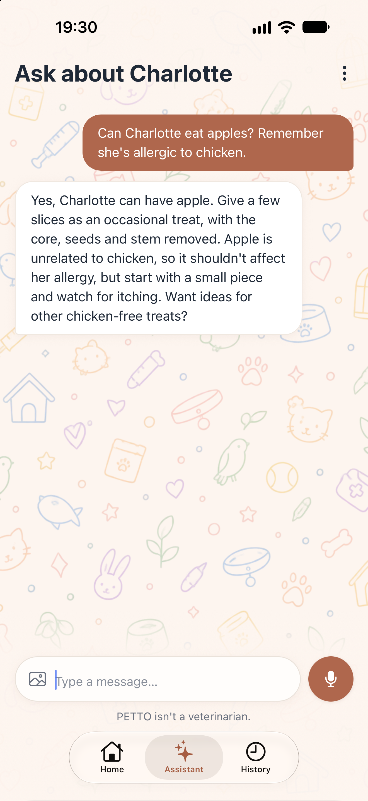

Can dogs eat apples?
Yes, with 3 simple rules.
The apple rules
1Remove the core, seeds and stem.
2Plain, thin slices. No sugar or caramel.
3A treat, not a meal. Start small.
Not sure about a food? Ask PETTO.

It remembers your pet's allergies. Health worries? Ask your vet.